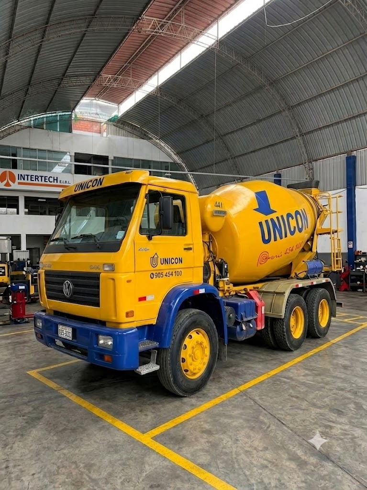
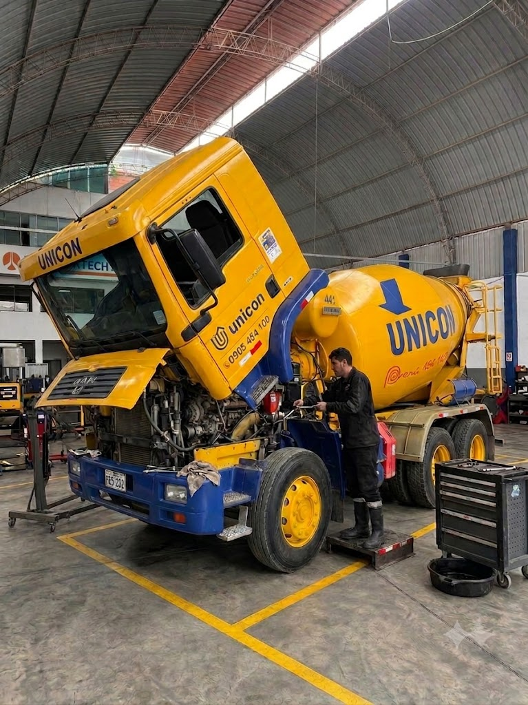
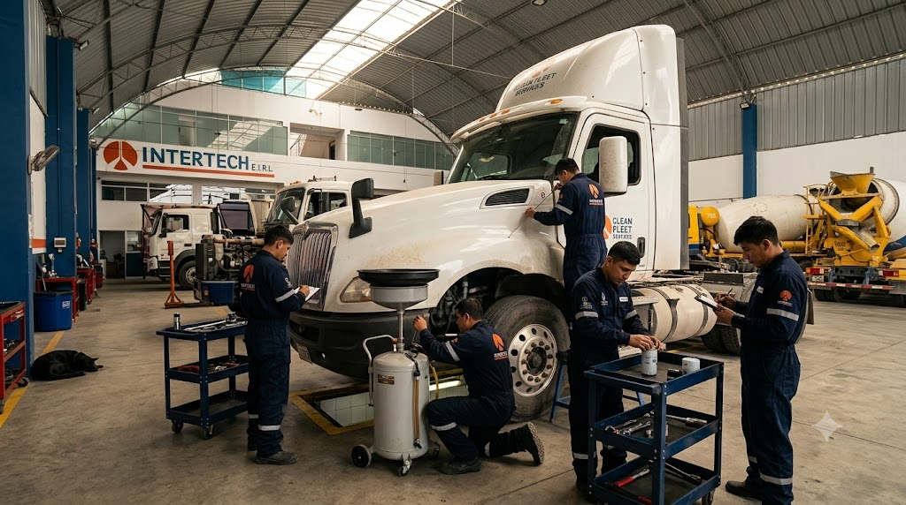

Buscamos convertirnos en el socio estratégico de su empresa, prolongando la rentabilidad de sus unidades mediante la intervención técnica de personal altamente calificado.
Pase el cursor sobre la imagen para inspeccionar visualmente los componentes internos y el trabajo de restauración que realizamos en los equipos.


Realizamos un desmontaje minucioso y una calibración electrónica para asegurar que el corazón de su maquinaria vuelva a operar con máxima eficiencia y bajo las normativas vigentes.
Implementamos escáneres multimarca para determinar de forma exacta las fallas en los tableros y cableados. Prevenimos cortocircuitos que paralicen su operación en campo.
Especialistas certificados en el ensamble y reparación de transmisiones críticas en marcas líderes. Garantizando tracción total y sin pérdidas de potencia en los terrenos más hostiles.


Pase el cursor por cada columna para expandir la información detallada.

Anticipamos el desgaste de componentes críticos antes de que se conviertan en fallas catastróficas, protegiendo su inversión.
Solicitar →Soldadura certificada y refuerzo de chasis para unidades expuestas a condiciones de minería y construcción pesada.
Solicitar →
Despliegue rápido de unidades móviles para atención directa en obra, reduciendo los tiempos de inactividad de su maquinaria.
Solicitar →